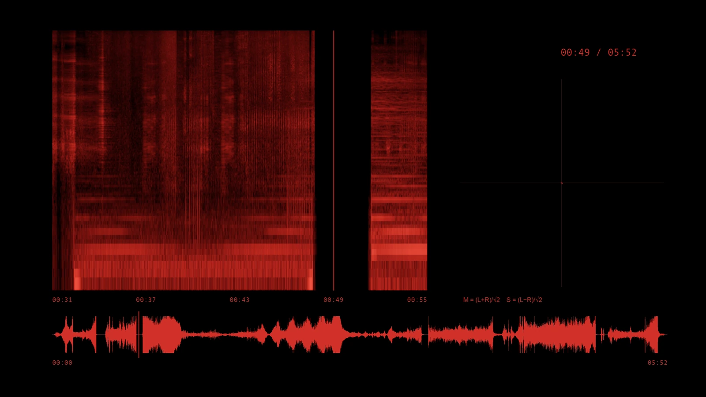

Yell
Acousmatic music with audio visualization.
Watch on YouTubeAbout the work
Yell is an acousmatic music piece constructed from a single 3-second gasp and fragments of electric guitar. Over nearly six minutes, this minimal material is torn, distorted, and reshaped through saturation, glitch, and hyper-processing. Traditional tools like GRM Tools are used sparingly—instead, distortion becomes composition.
Effects such as flanger, resonance, and chorus are applied to mid-high frequency vocal textures for FM modulation; custom LFOs and envelopes slice and reorganize sound with surgical precision. Processing is carried out using plugins like FabFilter, GLITCHMACHINES Convex, Valhalla, Turnado, and Infiltrator.
Wavetable synths (Serum, Vital) are used to mimic post-processed timbres, which are then mixed and re-processed to create an unstable field where truth and imitation cannibalize each other.
“Yell”为一首以主线人声与副线电吉他材料进行展开的幻听音乐。该曲人声方面仅选用一条3秒的喘气素材进行全曲近6分钟的变形。作者严格控制GRM Tools等传统变形工具的使用程度，尝试用饱和、失真、Glitch作为本曲的主效果，以获得一种扭曲、撕裂、人工的音响。
具体操作包括使用镶边/Resonance/Chorus等FX后的中高频人声素材对任意音频FM调制、自定义的包络与LFO曲线对音频进行更高灵活度的切片处理等，主要通过FabFilter，GLITCHMACHINES-Convex，Valhalla，Sugar Bytes-Turnado，Devious Machines-Infiltrator等插件来实现。
除了将已有素材进行变形外，作者还使用Serum、Vital等波表合成器捏出模仿变形之后声音的音色，再在其基础上与前者混合MIX后再度处理，使二者争竞交涨、难分“真假”。
Visualization
